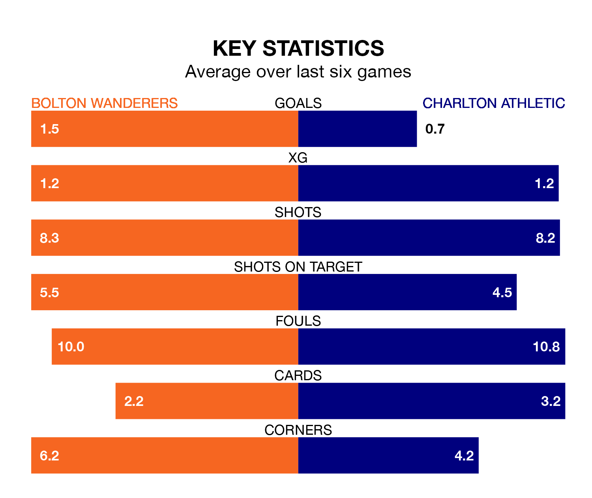

Bolton Wanderers are heavy favourites to keep all three points at home in Saturday's kick-off against Charlton Athletic.
Bolton, who sit third in EFL League One with 30 games played, are priced at 1.5 to seal victory at the University of Bolton Stadium.
Sitting 17 places and 30 points behind them in the table, Charlton are 5.2 to win with *Betting Company*, while the draw is at 4.0.
With 54 goals in 30 games so far this season, Bolton are scoring more than average in the league with 1.8 goals per game. And they are conceding fewer than average, letting in 29 goals at a rate of 1.0 per game.
Charlton are also above average scorers, with 1.4 goals per game, compared to a league average of 1.3. They have conceded 1.5 goals per game.
Wanderers are in reasonable form in EFL League One, with three wins and two draws from their last six games.
With no wins and two draws over that period, Athletic's form is much worse – they have taken two points from 18, compared to the hosts' 11.
With Nathan Baxter between the sticks, Bolton can rely on one of the league's safest pair of hands. He has kept 12 clean sheets in his 28 appearances this season, and only one other 'keeper – Portsmouth's Will Norris – has been able to prevent the opposition scoring on more occasions in EFL League One.
In the Addicks' net, Ashley Maynard-Brewer has two clean sheets in 25 games. He has conceded a goal every 66 minutes, 50% more often than the 101 minutes between goals for Baxter.
In the last 10 years, Bolton and Charlton have played each other on 12 occasions. Bolton won five of them, Charlton two, and they drew five times.
On average, Bolton scored 1.6 goals and the Addicks 1.0 in those matches.
Their last meeting was on October 28, when Bolton won 2-0 away.
Bolton's last match was on Tuesday, a 2-1 win against Wycombe Wanderers, with Gethin Jones and Jón Daði Böðvarsson getting the goals for Bolton.
Charlton drew 1-1 with Lincoln City last time out, also on Tuesday, with Freddie Ladapo on the scoresheet.
Updated: 12:06 (UTC), 15/02/24